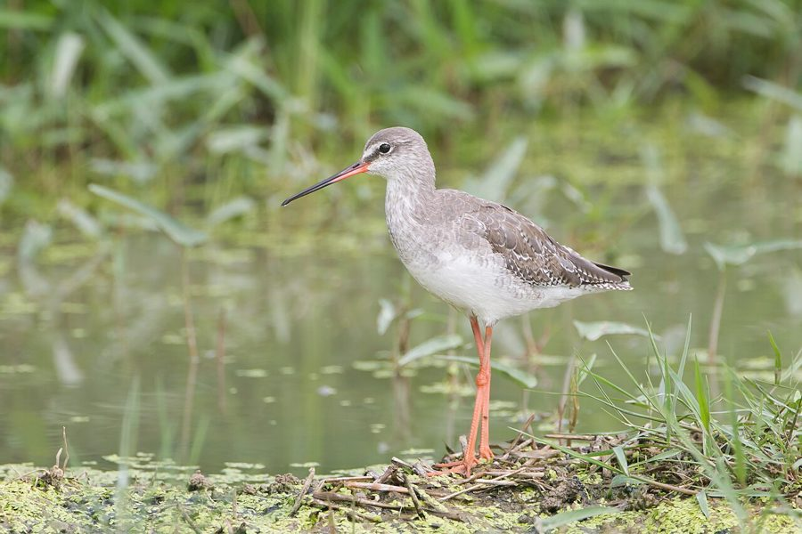

स्पॉटेड रेडशैंकSpotted Redshank
Tringa erythropus · Scolopacidae · BRD-0235

- Scientific name वैज्ञानिक नाम
- Tringa erythropus (Pallas, 1764)
- Family कुल
- Scolopacidae
- Hindi हिंदी
- स्पॉटेड रेडशैंक
- Local names स्थानीय नाम
- spotted redshank, redshank
- Status here यहाँ की स्थिति
- native
- Movement आवागमन
- Winter visitor
- Known from कहाँ दर्ज
- Others have published records from the Basti–Ayodhya districts बस्ती–अयोध्या के ज़िलों से दूसरों के प्रकाशित अभिलेख
- IUCN IUCN
- LC
- Review समीक्षा
- audited and independently read
When to look कब देखें
Winter visitor शीतकालीन प्रवासी. Expected mainly in August, September, October, November, December, January, February, March, April. मुख्यतः अगस्त, सितंबर, अक्टूबर, नवंबर, दिसंबर, जनवरी, फ़रवरी, मार्च, अप्रैल में अपेक्षित।
Arrives in August–September from breeding grounds in northern Russia and Siberia; departs by April. Expected on river systems and shallow wetlands. All migrants and visitors →
Tell it apart from इनसे अलग पहचानें
स्पॉटेड रेडशैंक / Spotted Redshank
Tringa erythropus (Pallas, 1764) — Scolopacidae
स्पॉटेड रेडशैंक — यह लंबी टाँगों वाली मध्यम आकार की चिड़िया उत्तरी साइबेरिया से सर्दियों में भारत आती है। अपने रिश्तेदार कॉमन रेडशैंक से यह थोड़ी अलग दिखती है — सर्दियों में यह हल्के रंग की होती है, लेकिन इसकी चोंच और पैर लाल होते हैं। ये नदियों और बड़े तालाबों के कीचड़ में चलती हैं और अपनी लंबी चोंच से छोटे जीव निकालती हैं।
Quick Identification त्वरित पहचान
| Feature | Description |
|---|---|
| Size | Medium wader; 29–33 cm long; taller and slimmer than Common Redshank |
| Winter plumage | Pale grey above; white underparts |
| Breeding plumage | (Not seen in region) Almost entirely black with white spots |
| Bill | Long, thin, slightly upturned; red base, dark tip |
| Legs | Long, red or orange-red |
| Wing pattern | White rump and trailing edge visible in flight |
| Behaviour | Deliberate, slow walk; often alone or in small groups; wades deeper than related species |
| Call | Distinctive loud chup-it or chup-chup |
Field tip: A medium wader with pale grey winter plumage, red legs, and reddish bill. In eastern UP during winter, look for this bird wading in deeper water than other Tringa species, sometimes partly submerged. The pale plumage and red legs are diagnostic. Wades more deliberately than the Common Redshank and often feeds alone.
हिंदी — कैसे पहचानें:
हल्के रंग की वाडर।
लाल पैर और लाल चोंच।
सामान्य रेडशैंक से बड़ी और पीली।
गहरे पानी में ज़्यादा वक्त बिताता है।
Morphology आकारिकी
Biometrics:
| Measurement | Range |
|---|---|
| Total length | 290–330 mm |
| Wing (flattened chord) | 165–185 mm |
| Tail | 70–85 mm |
| Bill | 48–62 mm |
| Tarsus | 40–50 mm |
| Weight | 90–180 g |
Size: 29–33 cm long; wingspan 48–62 cm. Larger and more slender than Common Redshank.
Winter plumage: (As seen in eastern UP) Pale grey or ash-brown above, with darker streaking on head and back. Underparts white. Rump white. Tail white with darker barring.
Breeding plumage: (Not in region) Almost entirely black with white spotting — hence the name "Spotted Redshank".
Bill: Long (4.8–6.2 cm), thin, and very slightly upturned. Base orange-red, distal third dark. Used for probing deep in soft mud and water.
Legs: Very long (4–5 cm), red or orange-red in colour. Longer than Common Redshank, allowing wading in deeper water.
Wings: Upper coverts pale grey; flight feathers darker. White trailing edge and rump diagnostic in flight.
Sexes: Females slightly larger; little plumage dimorphism in winter.
Vocalisations. Three main call types:
- Flight call: A distinctive chup-it or chup-chup, harsher than Common Redshank.
- Contact call: Soft whistles between foraging birds.
- Alarm: Sharp calls when disturbed.
हिंदी: तेज़ "चुप-इट" कूकना। कॉमन रेडशैंक से अलग आवाज़।
Behaviour & Ecology व्यवहार और पारिस्थितिकी
Wading and probing: Specialist probers, using long bills to penetrate soft mud and water for small invertebrates. Often wade in deeper water than other waders (up to belly depth).
Feeding: Primarily insectivorous, taking:
- Aquatic insect larvae (chironomids, mayflies, dragonfly nymphs)
- Small crustaceans
- Worms and small gastropods
- Occasional small fish
Foraging behaviour: Methodical, walking slowly through water, pausing to probe deeply. Often feed alone or in small flocks.
Habitat specialist: Prefers deeper water and mudflats compared to related species. Often wades with belly or chest submerged.
Territorial: Establish feeding territories in winter on river systems and wetlands, but may share overlapping ranges.
Flight: Fast, direct flight with flickering wingbeats. White rump and trailing edge distinctive.
हिंदी: गहरे पानी में शिकार करता है। अकेले या छोटे झुंड में रहता है।
Life Cycle / Phenology जीवन चक्र
Winter visitor: Arrives in eastern UP from August, with peak numbers September–November. Departs February–April, with most birds gone by May.
Breeding range: Tundra and boreal regions of northern Russia and Siberia. Breeds April–August at elevation 0–1,000 m.
Migration: Diurnal migrant, observed in flight over fields during passage.
Wintering: Concentrated at productive river systems and large wetlands. Less gregarious than Common Redshank; often solitary or in small groups.
Courtship: Takes place on wintering grounds in early spring.
Timing in UP: Earliest arrivals August; main arrival September–October; peak January–February; departure begins February, completed by April.
हिंदी: अगस्त में आना शुरू करते हैं, अप्रैल तक चले जाते हैं।
Host Plants or Prey आहार
| Food Type | Examples | Capture Method |
|---|---|---|
| Aquatic insect larvae | Chironomids, mayfly nymphs, dragonfly nymphs | Deep probing in soft mud |
| Small crustaceans | Freshwater shrimp, water fleas | Picking or probing |
| Aquatic worms | Oligochaetes, nematodes | Deep probing |
| Small gastropods | Freshwater snails | Extraction from mud |
हिंदी: गहरे में चोंच डालकर जीव निकालता है। कीचड़ में खोदता है।
Predators / Natural Enemies शत्रु
- Avian predators: Peregrine Falcon, marsh harriers, Eurasian Eagle-Owl
- Mammalian predators: Fox, jackal
- At roost: Corvids
हिंदी: बड़ी शिकारी चिड़ियाँ इसका शिकार करती हैं।
Agricultural / Human Relevance कृषि प्रासंगिकता
Protected status: Listed under the Wildlife (Protection) Act, 1972. Hunting is illegal in India.
Ecological value: Important insectivore in winter wetlands; helps control aquatic insects.
Wetland indicator: Used in wetland monitoring protocols to assess habitat quality.
हिंदी: यह विधि अधिनियम 1972 के अंतर्गत संरक्षित है।
Expected Locally स्थानीय रूप से अपेक्षित
Not a field record. Written from published accounts for eastern Uttar Pradesh. No confirmed local sighting yet — if you have seen it, that is what the atlas needs.
अभी तक स्थानीय पुष्टि नहीं। यह विवरण प्रकाशित स्रोतों से है, किसी अवलोकन से नहीं।
The Spotted Redshank is a winter visitor to mudflats and wetlands of eastern Uttar Pradesh from August to April. Based on its range and habitat preferences, the species should occur on the Ghaghra and Rapti river systems, particularly at sites with deep mudflats and water. It is less common than the Common Redshank and is often solitary or in small groups. Peak occurrence should be December–February. A first record would require a dated photograph showing the pale grey winter plumage, red legs, and long red bill, with place and date, submitted through the About page.
Distribution वितरण
Global range: Eurasia and northern Africa, breeding in tundra regions. Winters across Africa and southern Asia.
In India: Uncommon but regular winter visitor across the subcontinent.
In Uttar Pradesh: Winter visitor to larger wetlands, particularly in northern and eastern districts.
In Basti district / eastern UP: Rare winter visitor to the Ghaghra and Rapti river systems, August–April. Less common than Common Redshank.
Research Questions शोध प्रश्न
- What is the winter population of Spotted Redshanks in eastern UP, and how common is it compared to the Common Redshank?
- क्या यह प्रजाति हर साल पूर्वी उत्तर प्रदेश में दिखती है, या केवल कुछ सालों में?
- What is the depth of water that Spotted Redshanks prefer for foraging, compared to other Tringa species?
- How does the winter diet of Spotted Redshank differ from the Common Redshank in the same wetlands?
- क्या यह चिड़िया अकेले शिकार करना पसंद करती है? (A child can observe flocking behaviour and note group size.)
- Are the same individuals showing site fidelity across multiple winters?
Similar Species मिलती-जुलती प्रजातियाँ
| Species | Key Difference | Hindi | Field Rule | |
|---|---|---|---|---|
| [[common_redshank\ | Common Redshank]] (Tringa totanus) | Smaller; darker grey in winter; orange-red (not pure red) legs; darker overall | कॉमन रेडशैंक | Spotted Redshank is larger, paler, with longer red legs. Wades deeper. Longer and more slender overall. |
| [[common_greenshank\ | Common Greenshank]] (Tringa nebularia) | Much larger; greenish legs; straight, thick bill | ग्रीनशैंक | Greenshank is much larger with greenish legs and more robust build. |
| [[wood_sandpiper\ | Wood Sandpiper]] (Tringa glareola) | Smaller; spotted upperparts; greenish legs | वुड सैंडपाइपर | Wood Sandpiper is much smaller with spotted back and greenish legs. |
Field rule: A tall, pale grey wader with long red legs and red bill, often wading in deep water alone, is a Spotted Redshank. The longer legs, paler plumage, and deeper wading distinguish it from the Common Redshank.
Taxonomy & Classification वर्गीकरण
Original description. Described by Peter Simon Pallas in 1764 in Vroeg naamlijst der dieren, as Scolopax erythropus. Type locality: northern Russia.
Subspecies. Monotypic — no subspecies are currently recognised.
Family and order placement. Order Charadriiformes; family Scolopacidae (sandpipers and phalaropes). The genus Tringa contains eight species of "shanks".
Phylogenetic notes. Sister species to the Common Redshank (T. totanus). Both form a clade within the genus Tringa, characterized by reddish coloration and probing behaviour.
IUCN status rationale. Assessed as Least Concern (LC). The global population is large and stable. The species breeds in remote northern regions with little human disturbance. Wintering populations are affected by wetland quality.
हिंदी: कॉमन रेडशैंक का करीबी रिश्तेदार है।
Photo Gallery फोटो गैलरी
No photos yet — add field photos to media/species/spotted_redshank/ and run node scripts/sync_photos.js.
Wanted photos:
- In winter plumage showing pale grey
- Close-up of red legs and red bill
- Wading in deep water
- In flight showing white rump
- Head detail
References संदर्भ
- Pallas, P.S. (1764). Vroeg naamlijst der dieren. Amsterdam.
- Ali, S. & Ripley, S.D. (1987). Handbook of the Birds of India and Pakistan. Vol. 2. Oxford University Press, New Delhi. Pp. 240–242.
- Grimmett, R., Inskipp, C. & Inskipp, T. (2011). Birds of the Indian Subcontinent. 2nd ed. Christopher Helm, London. Pp. 132–133.
- Johnsgard, P.A. (1981). The Plovers, Sandpipers and Snipes of the World. University of Nebraska Press, Lincoln.
- BirdLife International (2023). Tringa erythropus. IUCN Red List of Threatened Species. IUCN, Cambridge.
- GBIF Occurrence Data — Tringa erythropus, India.
Source file: species/fauna/birds/spotted_redshank.md